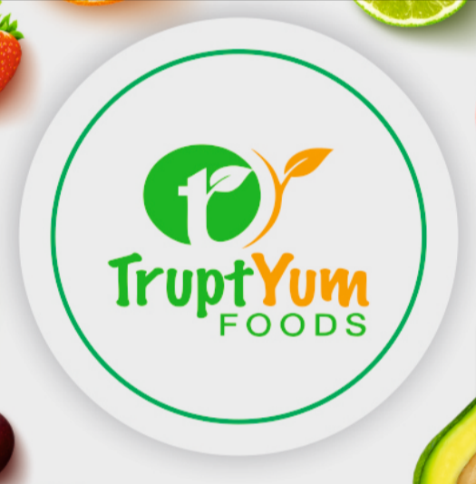
Willkommen bei Truptyum Foods, Ihrem Spezialisten für erstklassige gefriergetrocknete Lebensmittel, die Komfort, Nährwert und besten Geschmack vereinen. Gegründet im Jahr 2023 und heute mit über 3 Jahren spezialisierter Industrieerfahrung, betreiben wir eine hochmoderne Produktionsstätte in Vadodara mit einer jährlichen Kapazität von 1.400 MT. Aus Leidenschaft für gesunde Ernährung entstanden, garantieren wir kompromisslose Qualität für industrielle Großmengen sowie marktreife Private-Label-Lösungen.
Moderne Industrieanlage mit Reinraumverarbeitung, analytischem QC-Labor und hocheffizienten Sublimationsanlagen.
Hohe jährliche Durchsatzkapazität für Großaufträge, maßgeschneiderte Chargen und weltweite Exporte.
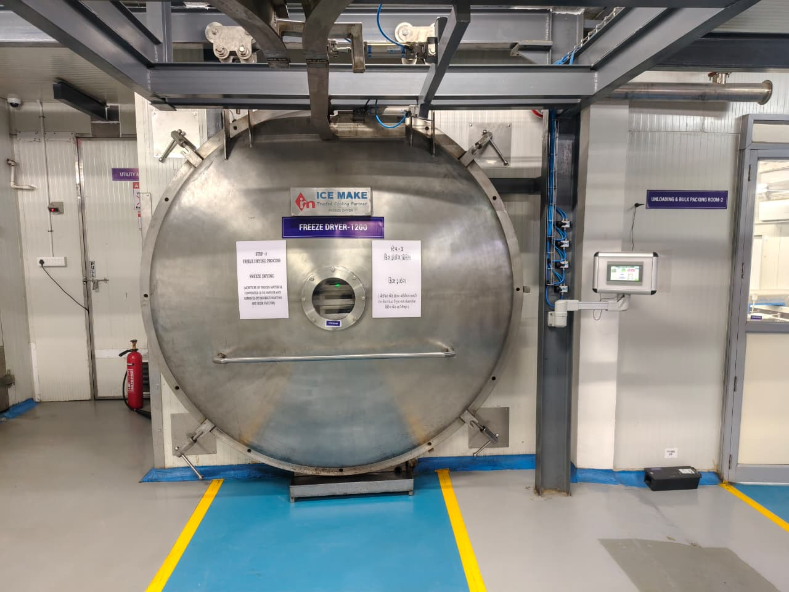
Bewahren Sie Aromen und Nährstoffe durch moderne Gefriertrocknung – für maximale Haltbarkeit ohne Konservierungsstoffe. Unser industrieller Prozess umfasst drei Stufen:
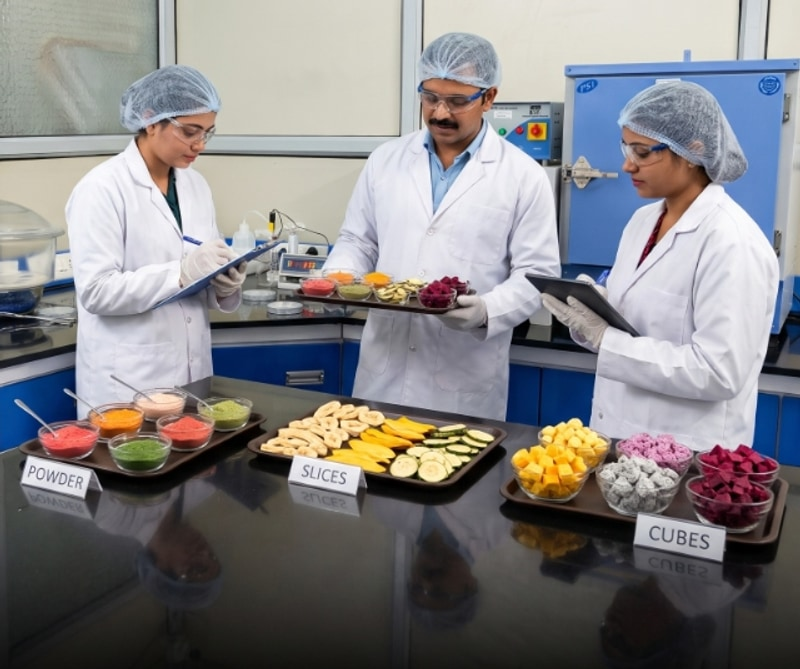
Innovieren Sie mit unserem Lebensmitteltechnologie-Team! Von der ersten Rezeptur über Prototypen bis zur analytischen Qualitätsvalidierung entwickeln wir maßgeschneiderte Produkte.
Rezepturspezifikationen, Feuchtegrenzwerte und Schnittgrößen festlegen.
Musterchargen fertigen und optimieren, bis der Zielstandard erreicht ist.

Lagern Sie Direktherstellung, Stickstoff-Schutzgasverpackung und Private-Label-Abfüllung an unser Werk in Vadodara für den erstklassigen Einzelhandelsvertrieb aus.
" GEMEINSAM BAUEN WIR IHRE MARKE AUF UND VERWANDELN IHRE VISION IN REALITÄT "Jetzt Partner Werden
Erleben Sie einen virtuellen Rundgang durch unsere moderne Anlage mit einer jährlichen Kapazität von 1.400 MT.
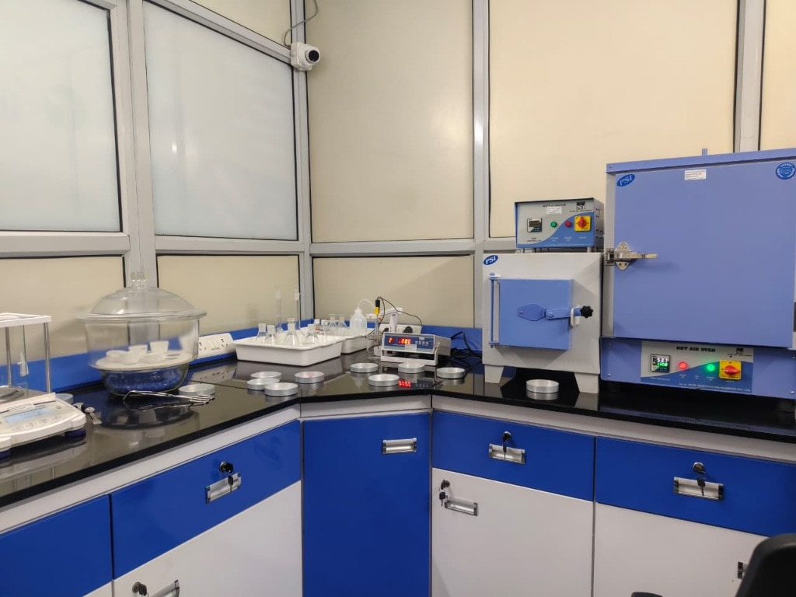
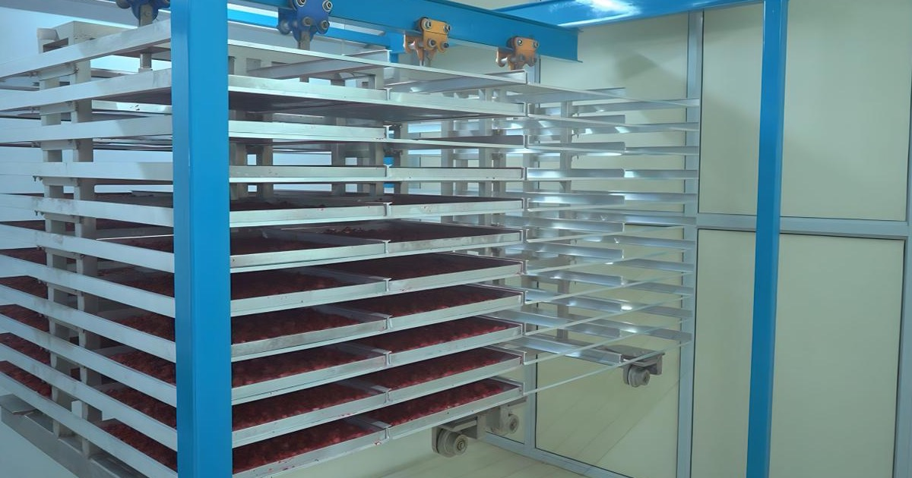
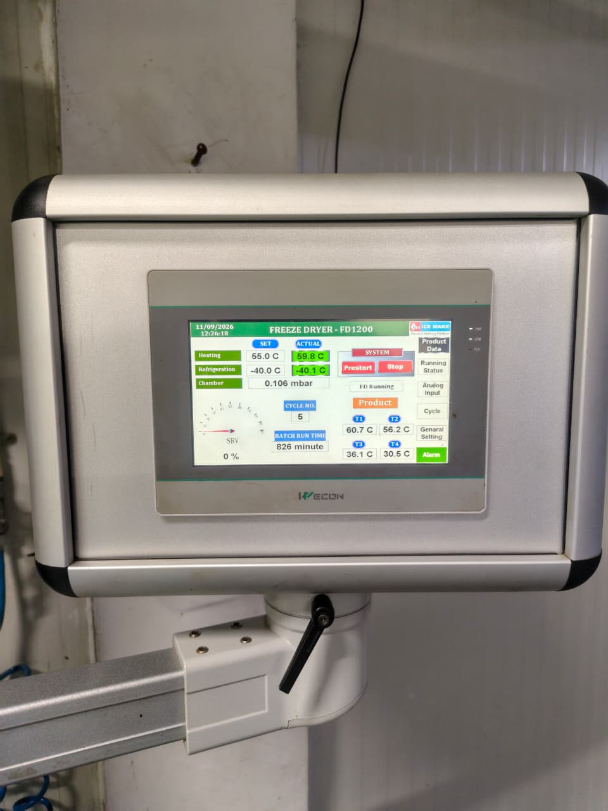
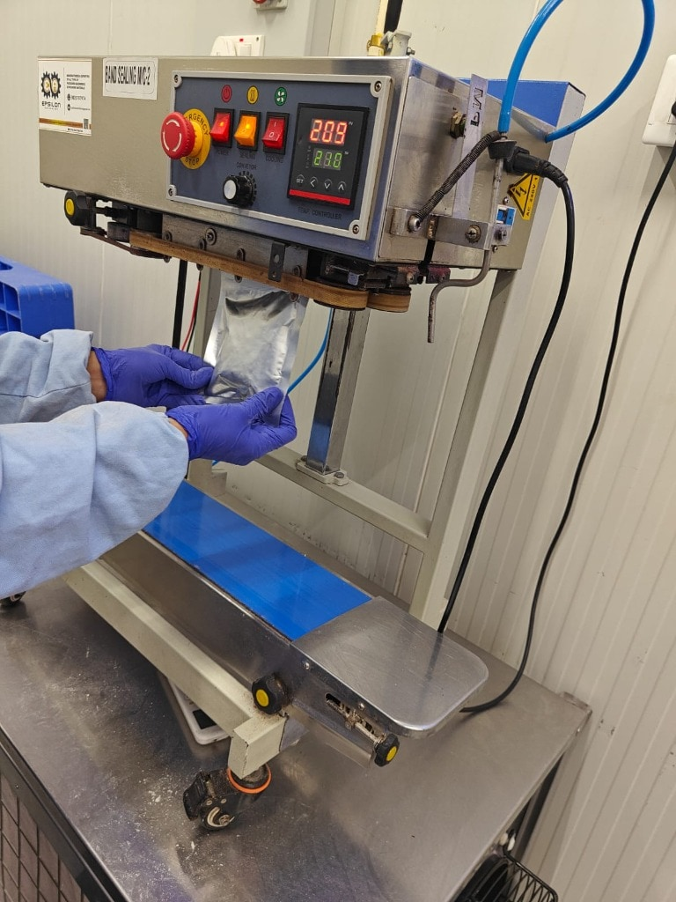
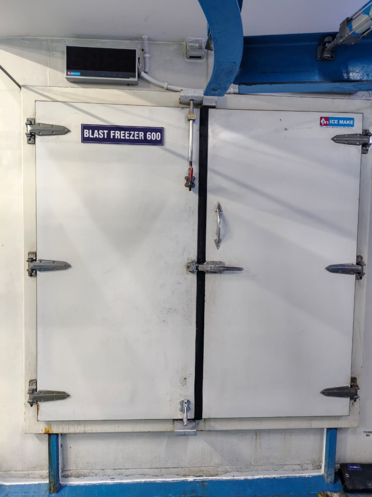
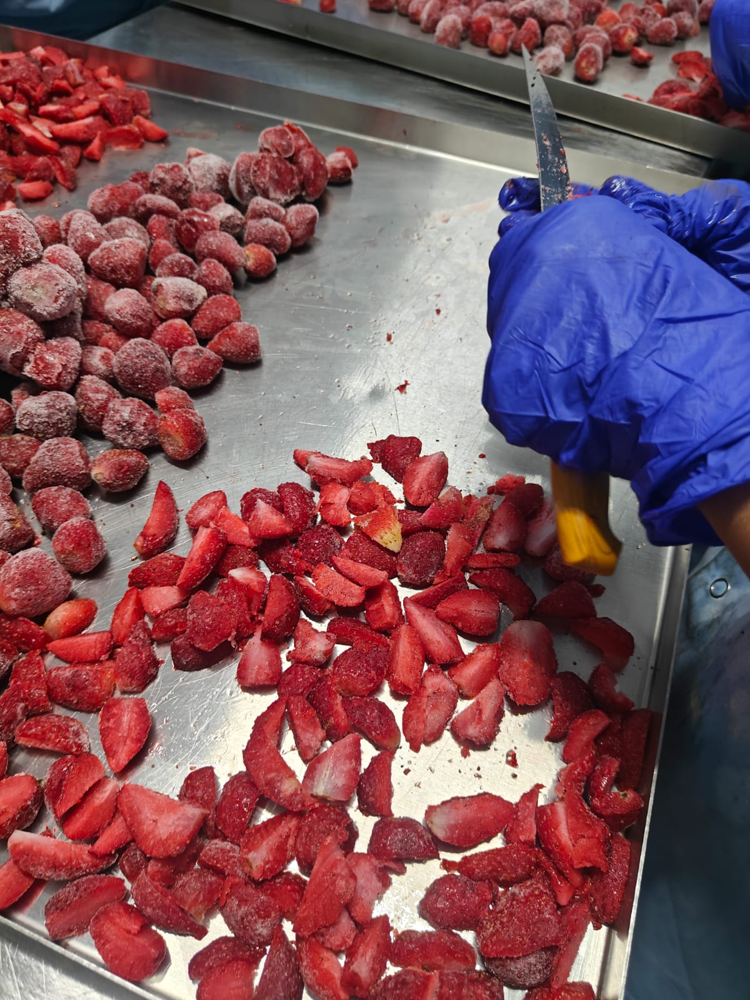
Pioniere in gefriergetrockneten Produkten mit 100% natürlicher Erhaltung für Lebensmittel, Getränke und Pharmazie.
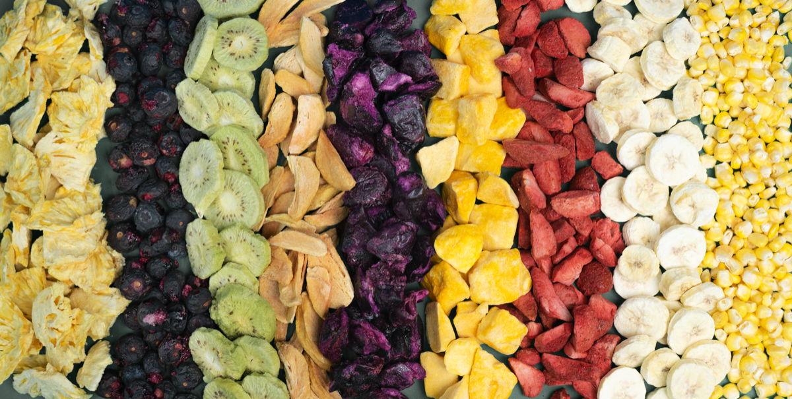
Bewahrung von vollem Geschmack, natürlicher Feuchtigkeit, Farbe und Süße in Bio-Früchten ohne Zuckerzusatz.
Unsere operative Skalierbarkeit, Produktionsleistung und weltweite Präsenz.
Unsere Produktionsstätte erfüllt strengste internationale Qualitäts- und Lebensmittelsicherheitsstandards für maximale Reinheit und weltweite Rückverfolgbarkeit.
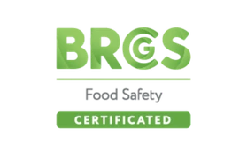
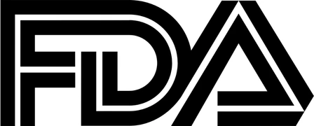
Schnelle Antworten zu Gefriertrocknung, Lohnherstellung und Großbestellungen.
Die Gefriertrocknung (Lyophilisierung) ist ein hochmodernes Entwässerungsverfahren. Das Produkt (Früchte, Gemüse, Kräuter oder Fertigmahlzeiten) wird auf Minustemperaturen (in der Regel -40 °C) tiefgefroren. Unter Vakuum wird anschließend durch sanfte Wärmezufuhr das gefrorene Wasser direkt vom festen Eis in Wasserdampf umgewandelt (Sublimation). Dabei bleibt die Zellstruktur vollständig intakt – Textur, natürlicher Geschmack und Nährstoffe bleiben optimal erhalten.
Im Gegensatz zur Heißlufttrocknung, bei der Lebensmittel schrumpfen und hitzeempfindliche Vitamine zerstört werden, bleiben bei der Gefriertrocknung bis zu 97 % der Nährwerte erhalten. Form und Farbe bleiben unverändert, das Produkt rehydriert in Sekunden mit Wasser, ist extrem leicht und verfügt über eine außergewöhnlich lange Haltbarkeit ohne jegliche Zusatzstoffe.
In feuchtigkeits- und sauerstoffdichter Verpackung können gefriergetrocknete Lebensmittel über 25 Jahre haltbar bleiben. Für den Lebensmitteleinzelhandel beträgt das typische Mindesthaltbarkeitsdatum je nach Verpackung 12 bis 24 Monate.
Ja, Truptyum Foods ist auf kundenspezifische Produktentwicklungen spezialisiert. Wir trocknen mehrteilige Rezepturen, gekochte Gerichte, Milchprodukte, Suppen und verzehrfertige Mahlzeiten. Unser F&E-Team stimmt Feuchtigkeitsgehalt und Trocknungsprofile exakt auf Ihre Rezeptur ab.
Da die Sublimation bei sehr niedrigen Temperaturen unter Hochvakuum stattfindet, gibt es keine Hitzebelastung, die empfindliche Vitamine (wie Vitamin C) oder flüchtige Aromastoffe zerstören könnte. Die physische Struktur bleibt fixiert, sodass Geschmack, Farbgebung und Nährstoffprofil dem frischen Ausgangsprodukt entsprechen.
Wir unterstützen Unternehmen jeder Größenordnung und bieten flexible Produktionsoptionen. Neben kommerziellen Großserien fertigen wir auch kleine F&E-Musterchargen und Testserien, damit Sie neue Produkte ohne hohes Investitionsrisiko am Markt erproben können.
Nein. Durch den Wasserentzug (Restfeuchte unter 2 %) wird das Wachstum von Bakterien, Hefen und Schimmelpilzen auf natürliche Weise unterbunden. Chemische Konservierungsmittel, künstliche Farbstoffe, Zucker- oder Salzzusätze sind überflüssig – unsere Produkte sind 100 % natürlich und Clean Label.
Unsere Lyophilisierungsdienste richten sich an E-Commerce-Food-Marken, Fertiggericht-Anbieter, Pharmaunternehmen zur schonenden Rohstoffstabilisierung, Kosmetikhersteller für pflanzliche Wirkstoffe, Bio-Kräuterlieferanten und Gastronomieunternehmen.
Die Preise richten sich nach Eingangsgewicht, Rohstoffart (Früchte, Flüssigkeiten oder Gemüse), Trocknungszyklusdauer, Verpackungsart (Großgebinde vs. Einzelhandelsbeutel) und Gesamtvolumen. Kontaktieren Sie uns für ein maßgeschneidertes Angebot.
Truptyum Foods betreibt hochmoderne Produktionsanlagen in Gujarat, Indien. Unsere Hauptwerke befinden sich in Padamla (Vadodara) und im Dantali Industrial Estate (Ahmedabad) mit hervorragender logistischer Anbindung an die Anbaugebiete und internationale Exporthäfen.
Wir stehen Ihnen für technische Spezifikationen, Lohnfertigungsanfragen und logistische Details gerne zur Verfügung.
Werk Vadodara: 1, At & Po, Banker Brother Estate, N.H.No.8, opposite
Vrundavan Hotel, Padamla, Ranoli, Vadodara, Gujarat, India - 391350.
Werk Ahmedabad: Dantali Industrial Estate, Gota-Vadsar Road, Nr.
Ahmedabad City At, Ta: Dantali, Gujarat, India - 382721.